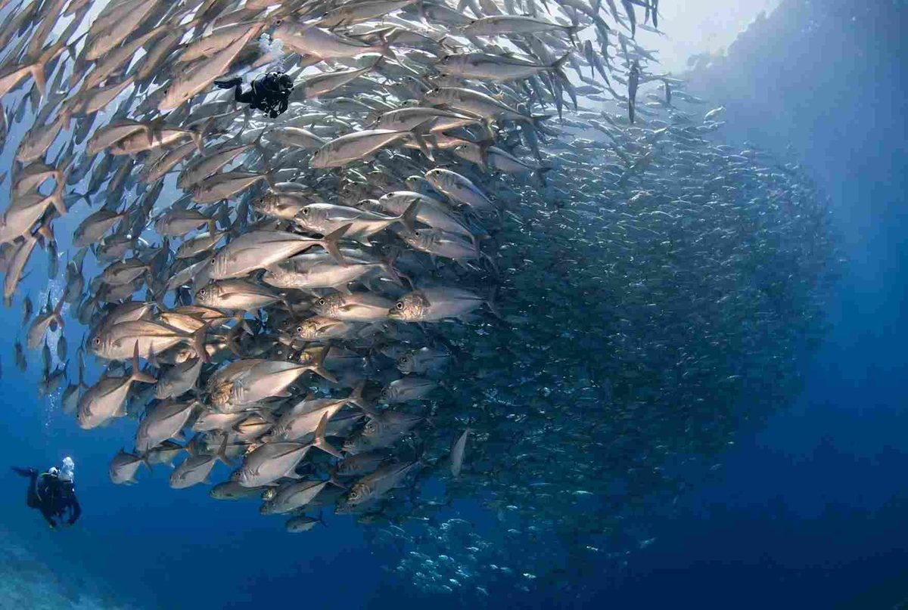

Diving in the Philippines is easier to plan if you choose the month first and the dive site second. There are excellent reefs in almost every region, but their good seasons don't line up. Tubbataha, the most famous of them, is only open from mid-March to mid-June. The reefs around Cebu, Bohol and Negros, on the other hand, can be dived through most of the year because the islands around them take the edge off both monsoons.
Two seasonal winds decide most of this. The northeast monsoon, the amihan, blows from roughly November to April and usually leaves the western coasts calm: Palawan, Mindoro and Batangas. The southwest monsoon, the habagat, takes over from about June to October and brings rain, swell and cloudier water to those same western sites. The central Visayas sit between the two and get less of either.
Below is a month-by-month view, followed by six areas worth building a trip around, with what each does best, when to go, what it costs and how divers usually get there.

Which Months Suit Which Sites
December to February
By Philippine standards the water gets cool, around 25 to 27°C at Malapascua, and that is when thresher shark sightings at Monad Shoal tend to peak. Anilao's best stretch starts now too, with blackwater night dives running from December to March and working best on the darker nights around the new moon. In Coron, the calmest and driest months begin in December. If you feel the cold on deep dawn dives, bring a 5mm suit or a vest to wear under your 3mm.
March to mid-June
Tubbataha opens. The water warms to between 27 and 30°C, visibility in the park often reaches 20 to 40 meters and liveaboards leave every week. Apo Reef is usually clearest from February to May, Malapascua keeps its good visibility through April, and Balicasag in Bohol is at its best from February to June. This is the busiest and most expensive window of the year, so boats and resorts fill early.
June to October
These are the habagat months. Tubbataha is closed, and Coron, Anilao, Puerto Galera and Apo Reef get more rain and more days when boats stay in. Coron and Anilao still have good days, though. Moalboal, Balicasag and the Negros coast usually keep diving through the season, often with emptier boats and better rates. A typhoon can still cancel trips anywhere, so leave a spare day at the end of any trip that ends with a flight.
Tubbataha Reefs: Mid-March to Mid-June Only
Tubbataha Reefs Natural Park is a UNESCO World Heritage Site in the middle of the Sulu Sea, about 150 km from Puerto Princesa. There is nowhere for visitors to stay on its islets, so the only way to dive here is from a liveaboard, and the Sulu Sea is only calm enough for those boats from mid-March to mid-June. For the rest of the year, the park is closed to tourists.
People make the trip because the reef is in such good shape. The park has about 360 coral species and 600 fish species, and 11 kinds of shark have been recorded there. Expect sheer walls, fast drifts, schooling jacks and tuna, rays and turtles, and maybe a whale shark if you're lucky. Because the currents can be strong, this trip is meant for experienced divers. An advanced certification and a healthy logbook make the week far more enjoyable.
Cost and booking
Boats sail weekly during the season, and many leave Puerto Princesa on a Sunday and come back on a Friday. Budget boats start at around US$1,270 per person, and a typical week costs US$1,800 to 3,500 depending on the vessel. That usually covers the cabin, meals and several dives a day, and most operators include the park's conservation fee, but confirm it before paying. With only three months to sell, popular boats are often booked close to a year ahead. Puerto Princesa has daily direct flights to and from Manila and Cebu.
Malapascua: Thresher Sharks Through the Year
Malapascua, a small island off the northern tip of Cebu, is one of the most dependable places anywhere to see pelagic thresher sharks. They come up to cleaning stations on Monad Shoal and Kimud Shoal around dawn, so the dives start before sunrise and go fairly deep, which makes them a better fit for divers with advanced training.
The island has divers all year. December to May is usually the calmest stretch, and January to April brings the clearest water. Buses from the North Bus Terminal in Cebu City reach Maya port in four to five hours for about PHP 250 to 400, and the boat across takes 45 to 60 minutes for PHP 100 to 150. A fun dive costs around PHP 1,800 to 2,500, and the Monad dawn dive often comes with an extra boat fee. A three-dive day that includes Monad comes to roughly PHP 3,500 to 5,000.
Anilao: Macro Diving, Best November to May
Anilao in Batangas is about three hours by road south of Manila, and it is where underwater photographers go for nudibranchs and other small creatures living on sand and rubble slopes. The dives are short boat rides from the resorts and suit every level. You can dive here all year, but November to May gives the most reliable conditions.
Full-board resort stays run from about PHP 1,800 to 6,500 a day, boats cost PHP 1,500 to 3,500, a dive guide PHP 500 to 700, and there is a local dive fee of around PHP 200 a day. A two-dive day with meals and a room usually comes to PHP 4,000 to 7,000. Our Anilao diving guide covers the resort strip and the best-known sites.
Coron: Second World War Wrecks, Best December to March
The bays around Busuanga and Coron hold a fleet of sunken Japanese ships from the Second World War. The Olympia Maru and Kogyo are popular first wrecks, the Okikawa Maru is a long tanker, and the Irako lies deeper at about 33 to 43 meters. The shallow Lusong Gunboat is easy enough for snorkellers. Between wreck dives, most boats also stop at Barracuda Lake and Kayangan Lake.
Diving goes on year-round, but December to March is the driest and calmest period. Going inside the wrecks takes proper wreck training, while swimming along the outside is fine for most certified divers. Busuanga's airport (USU) has direct flights to and from Manila and Cebu. A two-tank wreck trip costs about PHP 2,500 to 4,000, and Kayangan Lake has a PHP 300 entrance fee. For lake visits and the rest of the island, see the Coron wreck diving and Kayangan Lake guide.
Apo Reef: Best December to May
Apo Reef lies off the west coast of Mindoro, far enough out that it sees a fraction of Tubbataha's traffic. It has large coral formations, reef sharks and turtles, and the clearest water usually comes between February and May. Outside the amihan months the crossing can get rough, so this is very much a dry-season trip.
Divers either take a long boat ride from Sablayan, reached by ferry from Batangas port to Mindoro and then overland, or join one of the liveaboards that leave from Puerto Galera. The liveaboard costs more but saves a lot of time on the road.
Moalboal and Bohol: The Year-Round Choices
When the rest of the country is having bad weather, these are the places to go. In Moalboal, about three hours by road southwest of Cebu City, the sardine run swirls just off the beach, close enough to snorkel without a boat. Pescador Island, a short boat ride away, has walls covered in gorgonian fans. Fun dives cost about PHP 1,200 to 1,800, and seeing the sardines from shore costs nothing beyond your mask and fins.
In Bohol, Balicasag and Pamilacan off Panglao have wall dives, turtles and jack schools, and dolphins are often spotted on the way to Pamilacan. The fast ferry between Cebu City and Tagbilaran takes about two hours and costs PHP 800 to 1,200, and the dive shops on Panglao handle the boat rides. Both areas suit beginners and snorkellers, with a good mix of small life and bigger fish.
Matching the Site to Your Experience
Newer divers will be most comfortable in Moalboal, Panglao and Anilao, where conditions are usually gentle and shops are used to beginners. Tubbataha, Apo Reef, the Malapascua dawn dives and the inside of the Coron wrecks are better saved until you have more dives behind you and feel at ease in current and at depth.
Water temperature changes less than you might expect. A 3mm suit is enough for Tubbataha and Moalboal, while a 3 to 5mm suit is more comfortable for the deep early dives at Malapascua between December and February. Reef-safe sunscreen is worth packing wherever you dive.
Planning Around Your Travel Dates
With March to June free and room in the budget, Tubbataha is the trip to aim for. Book it early and plan everything else around it. If a liveaboard is out of reach, Apo Reef and Malapascua are also at their best in those months.
For a December to February trip, pair Malapascua's threshers with Anilao's macro and blackwater dives, or go to Coron for the wrecks while the seas are calm.
Between June and October, stay in the central Visayas. Moalboal's sardines and Bohol's walls rarely let you down, and the boats are quieter. Whatever the month, ask your dive shop about conditions a few days before you travel, since a single tropical storm can change the plan in any season.


Comments
No comments yet. Been here recently? Share a tip or ask a question.
Leave a Reply